Amerorchis Rotundifolia

Learn more about the Amerorchis Rotundifolia orchid on Wikipedia
Other Names: (Banks ex Pursh) Hulten, [Orchis Rotundifolia] Banks, [Habenaria rotundifolia] (Banks) Richardson, Small Round Leaved Orchis
Location: Newfoundland, New Brunswick, Quebec, Ontario, Manitoba, Saskatchewan, Alberta, British Columbia, Yukon, Northwest Territories.
Specific Habitat: In Ottawa District, fairly open treed fens, open sedge fens and some swamps associated with these fens. Within treed habitats, the orchid plants group in well-defined areas where the canopy is thin and shrub layer is absent. In sedge fens the plants are scattered across the open fen, on the wet peat of the fen floor or on mounds of fen mosses. In Bruce Peninsula, prefers cold northern forests and shaded bogs and swamps.
Flowering Season: June to early July.
Description: Height to 15 cm. Leaf solitary, clasping stem near base, dull yellow-green, ovate-elliptic. Raceme loose, irregular, somewhat one-sided, with 1-8 flowers, bracts lanceolate. Flowers white to pale pink blotted and spotted with deep purple. Petals form hood with dorsal sepal. Lip deeply 3-lobed, middle lobe spatulate to cuneate, lateral lobes smaller, elliptic. Column short, beneath the hood. Spur slender, curved.
Comments: Common in the northwest of the continent, widespread but local in the east. Only two locations in the Bruce Peninsula, rare and apparently approaching extinction in the Ottawa District, loose groups of flowering and non-flowering groups in Eastern Ontario. Highly variable pattern of lip colouration in the species.
References: Guide to Orchids of North America Orchids of Ontario The Orchids of Bruce & Grey
Calypso Bulbosa
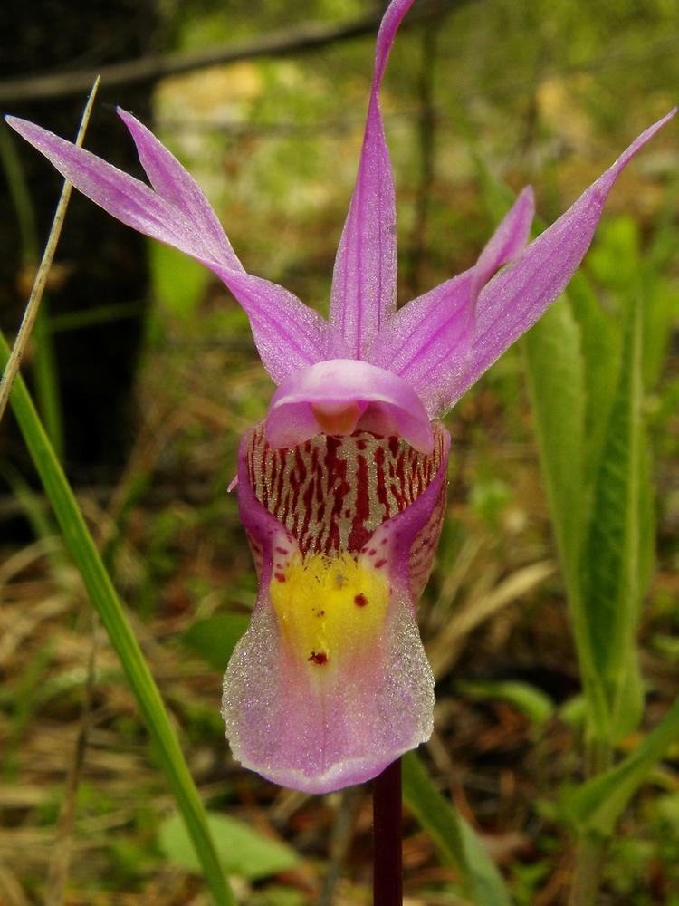Learn more about the Calypso Bulbosa orchid on Wikipedia
Other Names: (Linnaeus) Oakes var. americana (R. Brown) Luer, Calypso, Fairy Slipper
Location: Newfoundland, New Brunswick, Quebec, Ontario, Manitoba, Saskatchewan, Alberta, British Columbia, Yukon, Northwest Territories. This is primarily a Canadian-Alaskan orchid. In both Eurasia and North America this orchid is rare and local.
Specific Habitat: In the east, often located in inaccessible, damp forests. In the Ottawa District, the plants grow in calcareous cedar swamps, in partially open places in moist needle-mould on mounds around trees or on the swamp floor. In the heat of summer all living traces of the plant disappear. In the fall, a single leaf is produced, persisting under winter snows until spring blooming. This orchid is most common in the west, occurring at moderately high elevations in the Rocky Mountains, often in relatively dry pine forests, where it is far more successful in reproducing itself
Flowering Season: May-June-July.
Description: Height to 20 cm depending on habitat. Leaf: solitary, basal, dark to bluish-green, appears in autumn. Flower showy, solitary, sepals and petals laterally spreading, pinkish-purple, rarely whitish. Lip saccate, white, with yellowish 2-pronged apex, streaked with reddish-brown inside. Apron formed from edges of lip, covers lower part of sac, white with pinkish-purple edges and spots, crested with three rows of golden hairs.
Comments: Originally documented in an extensive wooded wetland which is now part of the drained and cultivated Holland Marsh, this orchid now seems to be extinct in what was the southern extreme of its range. Despite its extensive range, this orchid does not survive close contact with man: this once well-established orchid has been reduced to a small number of remote colonies. The white-flowered f. candida has been reported in Bruce County, Manitoulin Island, and Thunder Bay area. Var. occidentalis (Holzinger) Calder & Taylor is presently debated as a species, subspecies, variety, or form. It is more similar to the typical variety found in Eurasia than to ar. Americana. Its habitat is the Pacific Northwest from California to British Columbia. The plant is similar to the typical variety, but the lamina of the lip is mottled or irregularly blotched with purple, and the tuft of bristles is reduced to a few thin whitish hairs. Isolated in the Cascade Mountains and adjacent territory west of the Rocky Mountains in Canada, this variety probably relies on different pollinators, as evidenced by the lack of yellow bristles to attract bees.
References: Orchids of Ontario Orchids of the Northeast The Canadian Field-Naturalist Vol III-1 The Native Orchids of the United States and Canada excluding Florida The Orchids of Bruce & Grey
Cypripedium Reginae
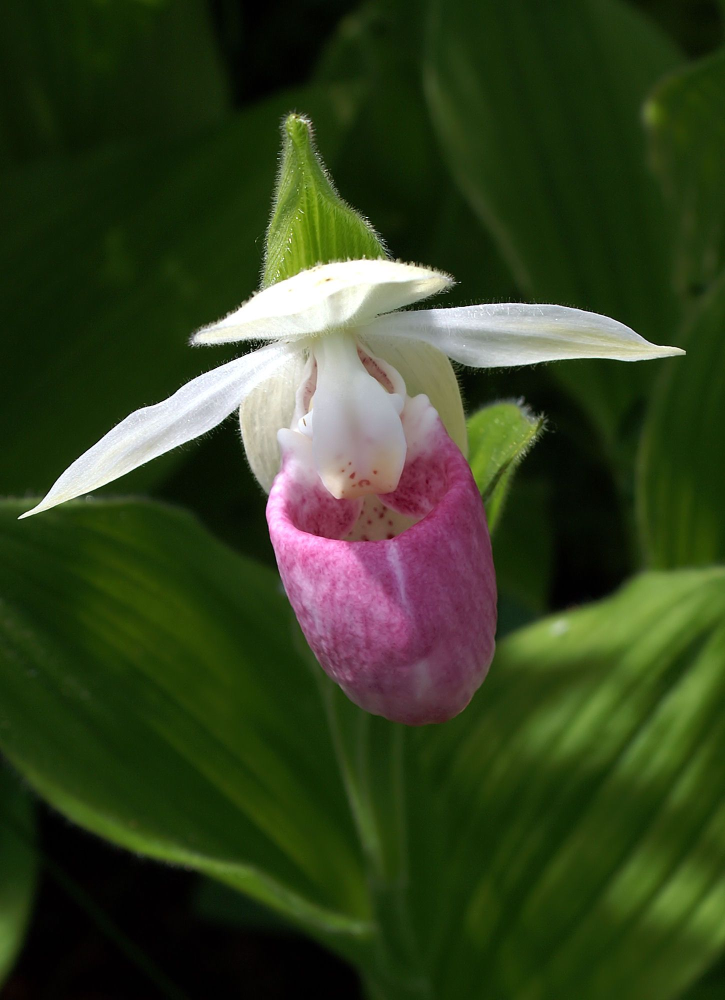Learn more about the Cypripedium Reginae orchid on Wikipedia
Other Names: Walter, Showy Lady's-slipper, Queen Lady's-slipper
Location: Newfoundland, Nova Scotia, Prince Edward Island, New Brunswick, Quebec, Ontario, Manitoba, Saskatchewan.
Specific Habitat: Found in swampy or boggy woods and in openings of cedar swamps. Occasionally it can be seen in wet, open roadside ditches. Prefers some sun and "cold bottom" conditions.
Flowering Season: June through July.
Description: Height: 20 - 90 cm. Leaves: 3 - 6, ovate-lanceolate, strongly ribbed and folded, spirally sheathing the stem, pubescent. Flowers: 1 or 2, occasionally 3 or 4; sepals and petals white, lip an inflated pouch, 2-5 cm. In length, white but covered with rose-purple markings, sometimes described as rose streaked with white.
Comments: Cypripedium reginae, like the yellow lady's-slippers, is covered by a dense mat of fine pubescence which can be irritating to the skin of some people in the manner of poison ivy. Cypripedium reginae forma albolabium Fernald and Schubert White Lady's-slipper The white form occurs rarely throughout the range of the species and is frequently found growing among the pink and white slippers. Vegetatively, it is identical to the pink and white form but the lip is completely lacking in pigment. It is sometimes an off-white or ivory. The pure white form has been reported in only three locations in Ontario: the Luther Marsh, the Minesing Swamp, and on the Bruce Peninsula. Across Canada, it can be found from Saskatchewan to Newfoundland.
References: The Genus Cypripedium The Canadian Field-Naturalist Vol III-1 The Native Orchids of the United States and Canada excluding Florida The Orchids of Bruce & Grey
Epipactis Gigantea
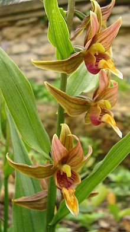Learn more about the Epipactis Gigantea orchid on Wikipedia
Other Names: Douglas ex Hooker [Epipactis americana] Lindley, Giant Helleborine, Chatterbox, Stream Orchid
Location: British Columbia
Specific Habitat: Gravelly shores, sandbars, seepage banks, around fresh and salt springs. In the northern part of its range, it prefers hot springs.
Flowering Season: March to August.
Description: Height to 1 m. from a short rhizome with fibrous roots. Leaves: 4 Ð-12, ovate - lanceolate, plicate, alternately clasping the stem. Raceme loose, up to 15 colorful flowers . Flowers greenish - yellow with purple veining; dorsal concave; lip divided into two portions by a central constriction; minute red warty elevations in centre of hypochile, apex pink with a pair of prominent fleshy orange calli. Epichile is hinged from the centre.
Comments: Plant is neither rare nor common. It is often locally abundant and very persistent, flourishing for decades in suitable habitats. Syrphid flies are pollinators.
References: The Native Orchids of the United states and Canada excluding Florida
Galearis Spectabilis
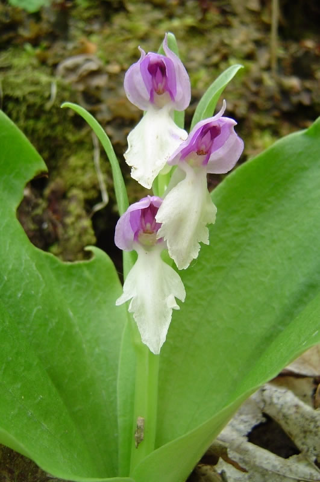Learn more about the Galearis Spectabilis orchid on Wikipedia
Other Names: (L.) Raf., [Orchis spectabilis], Showy Orchis
Location: New Brunswick, Quebec, and Ontario.
Specific Habitat: Rich, relatively open deciduous or mixed mature or semi-mature forests, occasionally in hemlock groves, or under beech trees.. Sugar maple is almost always the dominant tree, accompanied by a variety of other species. It is found growing in thick layers of decaying humus, often in association with white trilliums, hepaticas, jack-in-the-pulpit, wild ginger, and Canada violet. It appears to be confined to the portion of southern Canada that lies outside the Canadian shield. Trampling by cattle and forest "management" by man have been responsible for loss of previously noted orchid colonies.
Flowering Season: One of the first orchids to bloom in eastern North America (mid-May to early June), before the leaves are fully leafed out. It usually grows alone, or in small clusters, occasionally in larger colonies.
Description: Height to 20 cm. Two leaves, basal, dark green, bases folded into distinct peduncles sheathing the stem. Occasional floral bract, leaf-like, lanceolate. Raceme loose, terminal, up to 15 flowers. Sepals and petals mauve to pink and joined to form a hood; lip ten to twenty millimeters in length, white and spade-shaped; spur slender, tubular, about as long as the lip.
Comments: Colonies can persist and multiply for decades if the site does not become heavily shaded or overgrown with vegetation. Special feature is the spade-shaped lip and mauve colouring of all floral parts except the lip which is white. In a rare form, gordinieri (House), the hood or galea is white (Catling, 1982b).
References: The Canadian Field-Naturalist Vol III - 1 The Orchids of Bruce & Grey
Isotria Verticillata
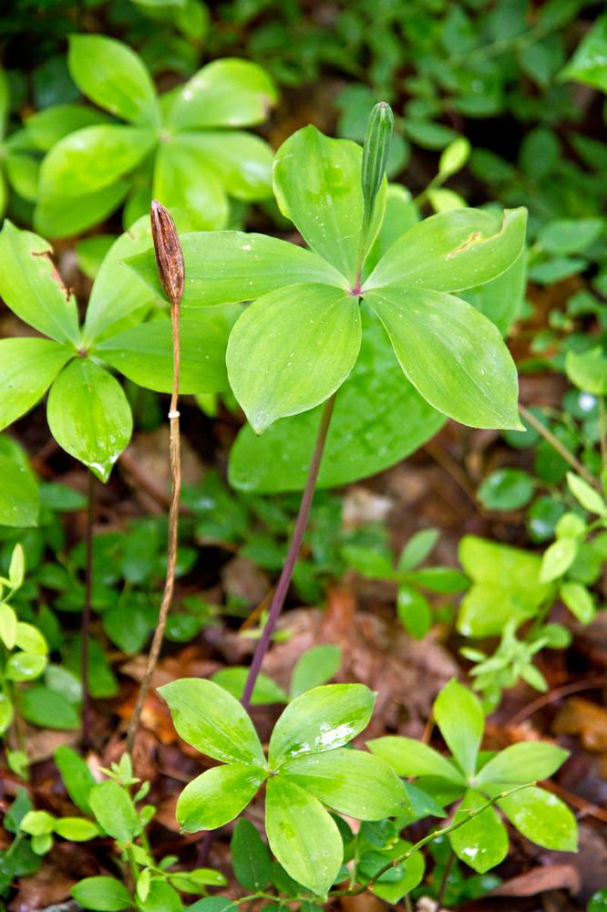Learn more about the Isotria Verticillata orchid on Wikipedia
Other Names: (Muhlenburg ex Willdenow) Rafinesque, Whorled Pogonia
Location: Ontario. Middlesex, Norfolk and Oxford Counties have yielded sightings over the years. In 1985, only Oxford County yielded a blooming plant. Southern Ontario inland from Lake Erie is the northernmost range for this orchid of the eastern United States.
Specific Habitat: Dry to damp hardwoods to mixed forests, and along the mossy edges of fens. Plants usually occur in fairly large colonies, but appear sporadically, often not flowering for several years.
Flowering Season: Late May to early June.
Description: Height: to 30 cm. Stem smooth, slender, purplish, hollow. Leaves: 5-6 in a whorl at the top of the stem, green, oblong. Flower: solitary, erect. Sepals purplish, narrowly lanceolate, widely spreading; petals pale yellow-green, obovate, converging over the column; lip obovate, three-lobed, the lateral lobes involute, edged in purple, the middle lobe white, expanded, undulate, the disc with a longitudinal, fleshy ridge.
Comments: To distinguish the non-flowering plant from one of the rare I. Medeoloides, one should compare the stems: The stem of the later is shorter and thicker, whitish green rather than purplish. Both stems are hollow, which distinguishes them from the more slender, fuzzy solid stems of Medeola virginiana (Indian Cucumber) with which it often grows. Also, the leaves of I. Verticulata tend to be a darker green and more blunt than I. medeoloides.
References: Orchids of Ontario Orchids of the Northeast The Native Orchids of the United States and Canada excluding Florida
Listera Australis

Learn more about the Listera Australis orchid on Wikipedia
Other Names: Lindley, Southern Twayblade
Location: New York State and coastal plain areas from Nova Scotia to the Gulf States. Ontario and Quebec are at the northern edge of its distribution.
Specific Habitat: Peat bogs, among mosses. Grows above the water level in sphagnum, also on the fen floor and on the sides of hummocks around trees. There is very little competing shrub cover where the orchid occurs.
Flowering Season: Beginning of June to June 21st.
Description: Height 14 - 21 cm. ( 5 - 8"). Stem brown. Leaves: two, ascending, sub-opposite. 7 - 16 flowers. Lip brownish red to grayish ruby with grayish green to grayish yellow translucent center. The lip has a very deep notch, separating two long, pointed lobes.
Comments: Correll (1950) declared this probably the rarest orchid to be found in Eastern Canada. Some plants at Alfred Bog, rare in Ontario and Quebec. In 1973 over 40 plants were found scattered in Alfred Bog in Prescott County (Ottawa Region) and more sites were discovered in northern Simcoe County, Muskoka, Algonquin, and Killbear Provincial Park (Whiting & Catling, 1986).
References: Orchids of Ontario The Canadian Field-Naturalist Vol III - 1
Listera Ovata
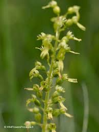Learn more about the Listera Ovata orchid on Wikipedia
Other Names: (L.) R. Brown European Common Twayblade
Location: Ontario.
Specific Habitat: Gravelly humic soil over dolomite, in both damp and dry cedar woodlands.
Flowering Season: June and July.
Description: Height 20 - 60 cm. Leaves - 2, opposite, below middle of stem, ovate to elliptic, up to 15 X 12 cm. Flowers are yellowish - green, lip dilated and cleft at the apex into two blunt lobes with a small tooth in between.
Comments: A much larger plant than our native Twayblades. Vigorous and widespread in a variety of habitats throughout Europe, excepting Portugal, and extending into Siberia and India. First discovered, near Red Bay in the Bruce Peninsula by Bessie Plunkett of Thunder Bay. In 1980 a second colony was discovered in southwestern Wellington County (Anderson and Goltz).
References: Orchids of Ontario The Orchids of Bruce & Grey
Piperia Elegans
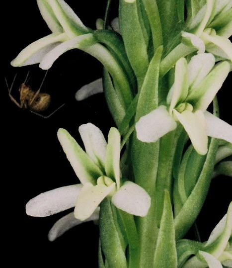Learn more about the Piperia Elegans orchid on Wikipedia
Other Names: (Lindley) Rydberg [ Platanthera elegans ] Lindley, [Habenaria michaeli] Greene, Elegant Piperia, Many-flowered Piperia, Wood-rein Orchid
Location: British Columbia.
Specific Habitat: A common plant of the mountainous Pacific Northwest, more restricted than P. unalascensis. Grows in leafy humus of open woods, in ravines and on mountainsides, at low altitudes and at sea level.
Flowering Season: Late July to mid-August.
Description: Height: to 90 cm., plant slender to stout, glabrous. Leaves: 3-5, basal, oblong-elliptic, withered and dried before flowering time. Bracts on the stem remain fresher. Half the length of the stem is a congested raceme of green flowers which open nearly simultaneously. Flowers: larger than those of P. unalascensis, bright green, yellow anthers, ovate lips with a central thickening, constriction towards the base, then dilation into basal lobes; spur slender, 2-3 times the length of the lip. Flowers closely overlap, often hiding the spur from view.
Comments: Reaches its peak of flowering a little later in the season than P. unalascensis
References: The Native Orchids of the United States and Canada excluding Florida.
Piperia Maritima
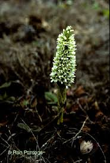Learn more about the Piperia Maritima orchid on Wikipedia
Other Names: Rydberg [Habenaria maritima] Greene, Coast Piperia
Location: British Columbia
Specific Habitat: Only along the rugged Pacific coast, on margins of land exposed to frequent winds, fog, and blanketed by dwarfed, tundra-like vegetation. Grows in thick, spongy, bog-like layer of humus that stretches from the edge of cliffs to inland rocky forested slopes.
Flowering Season: July through September.
Description: Height: to 35 cm., plant glabrous, stout. Leaves: 3-5, basal, oblong-elliptic. Short, thick stem is almost fully sheathed by overlapping bracts. The leaves appear very early in the spring, and are desiccated by the dry summer, disappearing before the flower spike emerges from the ground. Flowers: a robust, tightly packed cone of blooms, white, petals prominently striped with a central deep green band. The flowers are the largest of the genus; floral parts are longer but similar to those of P. elegans. The lip is ovate, obtuse, fleshy with a central ridge, constricted above the base which is dilated into rounded lobes. The long, slender spur is not easily seen because of the tightly packed flowers on the raceme.
Comments: May be found near an occasional Spiranthes romanzoffiana which occupies similar habitat. P. elegans can be found growing on nearby wooded hillsides.
References: The Native Orchids of the United States and Canada excluding Florida
Platanthera Ciliaris
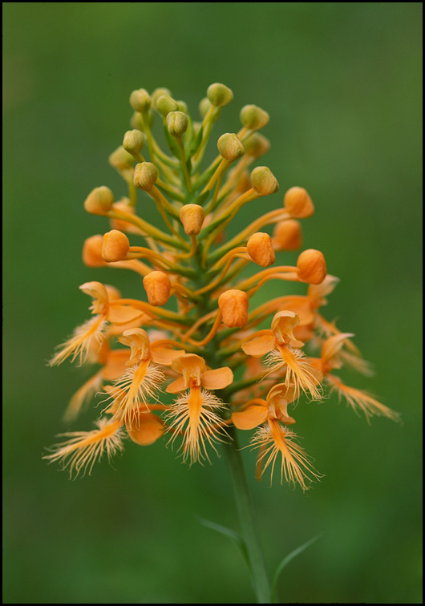Learn more about the Platanthera Ciliaris orchid on Wikipedia
Other Names: (Linnaeus) Lindley [Habenaria ciliaris] (L.) R. Brown, yellow fringed orchid
Location: Ontario.
Specific Habitat: With a broad distribution through the Eastern United States, the northern limit of its distribution reaches into Canada only into South-west Ontario. Platanthera ciliaris can be found in the margins of woods, thickets and in open bogs. Possibly now extinct in Ontario.
Flowering Season: From late June in the North to late September in the South.
Description: Height to about 1 m.. Stem stout at base. Leaves long, narrow, tapering. Raceme is loose to dense with many deep orange flowers. Llip is 10 mm. long, heavily fringed. Spur slender, longer than the flower.
Comments: The presence of Platanthera ciliaris in Canada is known through historical sightings and collections and is now thought to be extinct here. In 1995, Allan B. Anderson with the University of Guelph attempted to re-introduce the plant with artificially cultured seedlings in the Windsor area. cutbacks at the University, Mr. Anderson has not had an opportunity to check on their success.
References: Orchids of Ontario Orchids of the Western Great Lakes Region
Platanthera Lacera
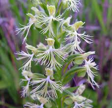Learn more about the Platanthera Lacera orchid on Wikipedia
Other Names: (Michaux) G. Don in Sweet var. lacera, [Habenaria lacera ] (Michx.) Lodd., Ragged Fringed Orchid, Prairie White Fringed Orchid
Location: Nova Scotia, Prince Edward Island, New Brunswick, Quebec, Ontario, Manitoba.
Specific Habitat: Hardier than many of the Rein Orchids, growing in a variety of sterile acid soil conditions. Amount of moisture seems unimportant so long as the area is not completely dry. Frequent and local in Southern Ontario and north to Cochrane, Thunder Bay and Rainy River Districts. Grows among grasses and sedges in bogs, roadside ditches and sometimes in deep shade of low Deciduous woods. Generally rare in Eastern Ontario, but becomes locally common when ideal habitat is available: often where human removal of vegetation from sandy areas has occurred
Flowering Season: Late June to early August.
Description: Height to 50 cm. Stem slender to stout. Leaves 2 - 5, sheathing the stem, becoming bracts above. Raceme lax to dense, 20 - 40 flowers. Flowers pale yellow-green to greenish-white. Lip has strange lip-lacerations: outer lobes deeply divided into almost threadilike segments, middle lobe less so.
Comments: Plants are easily over-looked, being inconspicuous among the grasses and sedges with which they are associated.
References: Orchids of Ontario The Canadian Field-Naturalist The Orchids of Bruce & Grey
Spiranthes Casei
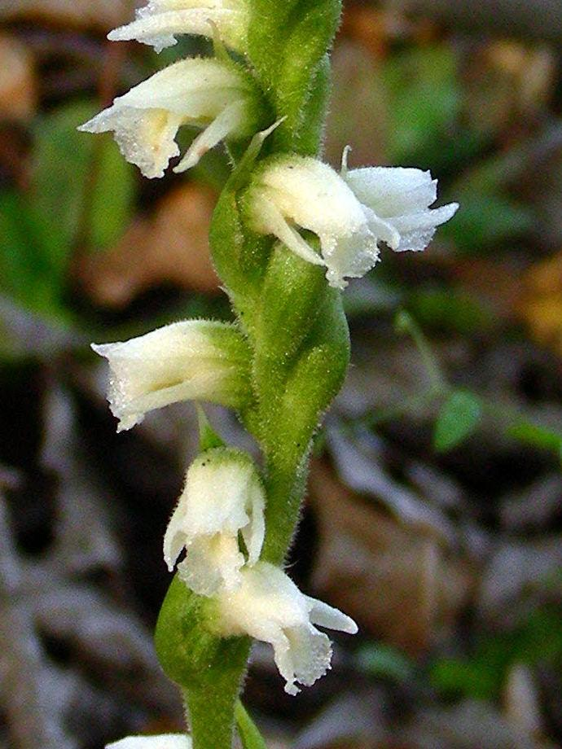Learn more about the Spiranthes Casei orchid on Wikipedia
Other Names: Catling and Cruise var. casei Case's Ladies' Tresses
Location: Nova Scotia, Quebec, Ontario.
Specific Habitat: Dry to moderately moist sandy soils, deep to shallow, and sand filled crevices of igneous rock, roadsides and pastures. It is mostly a colonizer of disturbed sites where it develops large colonies until conditions change. Its primary habitat is the rocks and soils of the Canadian Shield.
Flowering Season: Mid August to mid September.
Description: Height to 40 cm. Stem with reddish pubescence on back. Basal leaves ovate-lanceolate, withering before flowering. Sheath leaves persist until flowering. Inflorescence up to 15 cm. long, with 3-8 flowers loosely arranged in a single spiraled rank. Flowers are tubular, cream coloured. Dorsal sepal and petals converge to form a tubular hood over the lip, tips of all three parts pointing outwards. Lip is egg-shaped, with an uneven outer margin, tip down-curved. Flowers have a strong pungent odour when bruised or collected.
Comments: Only recognized as a separate species in 1974. Orchid is distinguished from S. cernua by its off-white rather than pure white flowers, and arrangement in a single, corkscrew-like spiral.
References: Orchids of Ontario Orchids of the Northeast The Canadian Field-Naturalist The Orchids of Bruce & Grey
Spiranthes Lucida
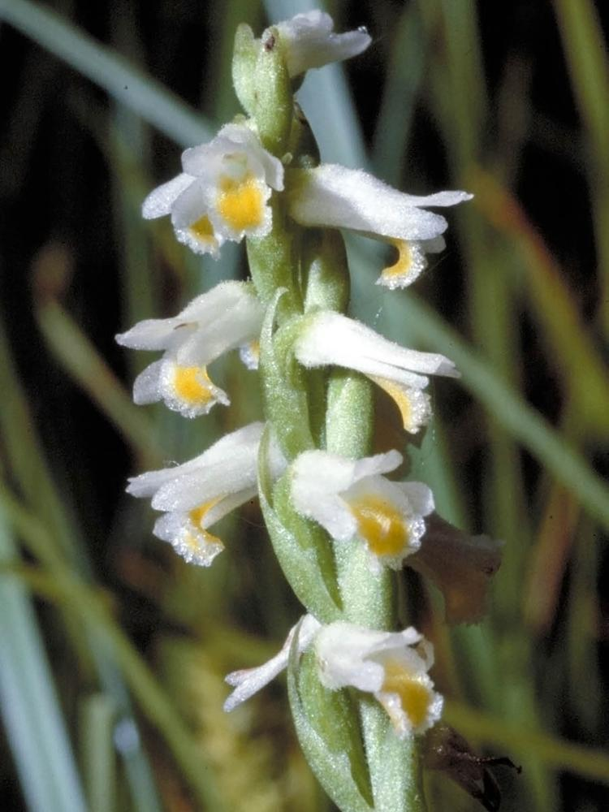Learn more about the Spiranthes Lucida orchid on Wikipedia
Other Names: (H.H. Eaton) Ames, Shining Ladies' Tresses, Wide Leaved Ladies' tresses
Location: Ontario. Nova Scotia, Prince edward Island, New Brunswick, Quebec, Ontario. Range extends from New Brunswick to Michigan, and south to Virginia and Kansas.
Specific Habitat: Found on calcareous, rocky or sandy open areas, along inland lakes, rivers and Lake Huron. It is often found among grasses and sedges where the ground has been flooded in the spring.
Flowering Season: Late September to October.
Description: Height 4 Ð 15 cm. Stem glandular, hairy. Leaves several, clustered at base, shiny green and prominent, oblong lanceolate, blunt to acuminate. Flowers are white, spirally twisted around a slender spike 2 Ð 5 cm. long. Often spiraled to create 3 ranks. Flowers nodding or horizontal. Dorsal sepal with lateral petals forms a hood over the column. Lip edges white, medium stripe yellow, oblong, rounded at the flaring apex. Sometimes fragrant.
Comments: This is the smallest, earliest blooming and least abundant of our spiranthes. The white flower with the deep saffron yellow lip is a colour combination that is unique in Ontario orchids.
References: Orchids of Ontario The Canadian Field-Naturalist Vol III-1 The Native Orchids of the United States and canada excluding Florida The Orchids of Bruce & Grey
Spiranthes Ochroleuca
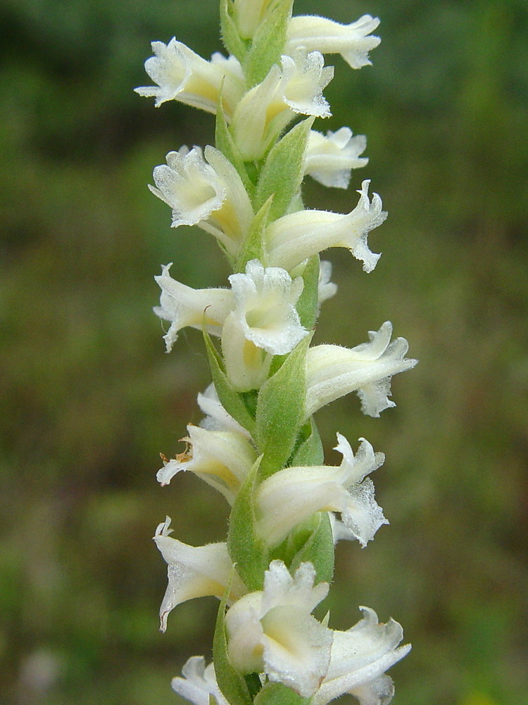Learn more about the Spiranthes Ochroleuca orchid on Wikipedia
Other Names: (Rydberg) Rydberg, Yellow Nodding Ladies' Tresses
Location: Newfoundland, Nova Scotia, Ontario. Distribution in a narrow band eastwards from the Great Lakes through northeastern Ohio, Pennsylvania, New York, and the New England states.
Specific Habitat: Except for one location in southern Frontenac County, this orchid appears confined to the Carolinian Zone of southern Ontario. It occurs on acid sandy soils in dry, open habitat. It grows typically on higher ground, in more shade than S. cernua.
Flowering Season: September to mid-October.
Description: Height to 50 cm. Plant pubescent above, glabrous below. Leaves 3 - 6, green, basal, and cauline, extending up the stem as leafy bracts. Inflorescence of up to 60 pale yellowish flowers, in a single coil appearing in several ranks. Frequently the twist is so loose that a single spiralling rank can easily be seen. The tip of the spike is narrow and pointed as compared to the blunt cylindrical spike of S. cernua. Flowers are white or creamy with pale yellow on the lip.
Comments: This orchid is thought to be native to Ontario, although there is no definite record of it prior to 1968. It seems to be restricted to the northeastern part of the range of S. cernua.
References: Orchids of Ontario The Native Orchids of the United States and Canada excluding Florida